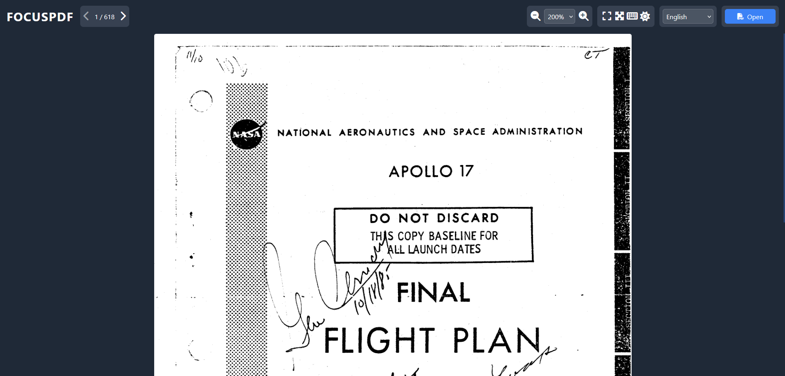

PDF Viewer for the Future
Experience PDF viewing like never before with FOCUSPDF. Seamless experience with clean interface and powerful features. Yes, AI wrote this one too.

Why Choose FOCUSPDF?
Multi-Language
Support for 11 different languages.
Dark Mode
Easy on your eyes with beautiful dark theme support.
Keyboard Shortcuts
Boost your productivity with customizable shortcuts.